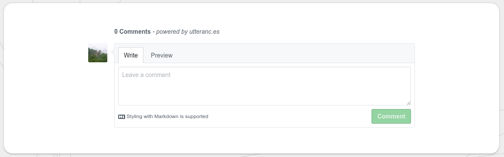

Hexo NexT 魔改系列之三 ── 评论篇
20200806更新：仿照hexo-next-utteranc，我写了一个使用CommentsApp评论系统的插件hexo-next-discussbot。
这是一个基于Telegram的评论系统，需要登陆Telegram账号才能评论。
20191110更新：如果要使用utterances作为评论系统的话，可以使用官方的插件hexo-next-utteranc。本文的方法在NexT主题更新至7.4.0之后已失效。
20190821更新：目前已改用集成到NexT主题中的DisqusJS，并使用ZEIT部署，方法见disqusjs-proxy-example。
NexT主题本身集成了五种评论插件：Disqus，畅言，Valine，来必力和gitment。
Disqus应该算是全球最大的评论系统了，很多博客甚至一些其它网站都在使用，功能足够强大，也比较美观，还支持匿名评论。之前我也一直在用，本来打算不用折腾就可以用了，结果发现，Disqus居然被墙了，WTF？？？
查了一下，大概是16年7月的事情，嗯。。。
好吧，看来Disqus只能作为备用的评论系统了，还需要一个不用翻墙就能用的评论系统才行。
也有几种免翻墙用Disqus评论的解决办法，例如disqus-proxy、DisqusJS和Disqus PHP API，不过它们都需要另外一台服务器来进行反代理，而我的博客是放在Github上的，也没有多余的服务器可以用，只好放弃了。
畅言，搜狐作的评论系统，需要备案才能使用。有人能告诉我Github Page上的博客怎么备案么。。。
而且，按照国内评论系统的尿性，说不定那天就又关闭了，就像之前的多说、友言和网易云跟帖。。。
Valine，这个倒是一个不错的选择，看上去也比较简洁明快，不过是基于Leancloud的，还得去配置一个Leancloud账号。其实这是一个不错的选择，可以一试。
来必力，韩国的一个评论系统，看上去不错，而且支持多账号登录，不过在国内加载有点慢。
gitment，使用Github的issue系统作为评论系统，很geek的一个想法，不过看到这权限，能够读写所有公开的repo？？？

这是不是意味着可以把我所有的repo全部删掉。。。
关于gitment的安全性的讨论，参见imsun/gitment和Gitment 的安全性争议。
1. 添加utterances评论系统
在搜索gitment的时候，发现了一片utterances的介绍文章，发现这是一个好东西，同样是基于Github的issue系统，但由于是基于Github App构建的，权限控制的颗粒度要细一些，可以只具有读写issue的权限，不需要读写代码的权限，而且可以只在需要的repo中安装。这才是一个合格的评论系统应该有的权限嘛。

DisqusJS
不过utterances没有集成在NexT主题中，需要手动添加。
打开主题文件夹，在layout/_third-party/comments/中新建文件utterances.swig，并添加下面的内容：
1 | {% if theme.utterances.enable %} |
然后在layout/_partials/comments.swig中添加下面的内容：
1 | {% elseif theme.valine.enable and theme.valine.appid and theme.valine.appkey %} |
最后在主题配置文件中添加如下配置：
1 | utterances: |
三个配置选项都是必填的，第一个是配置issue所在的repo，第二个是如何决定如何寻找对应的issue，第三个决定采用亮或暗的主题。
然后可以愉快的使用了～

不过，utterances有默认宽度限制，在页面上明显要比外边框窄很多，感觉很难看，所以我把宽度限制给去掉了，方法是在source/css/_custom/custom.styl中添加以下内容：
1 | .utterances { |
这样就显得好看多了。

utterance默认不会创建issue，而是会在第一次评论的时候自动创建相应的issue，这个也比gitment好用不少。
2. 使用 Disqus PHP API 进行反代理
待更新
3. 使用 Valine 作为评论系统
参见：
Valine: 独立博客评论系统
使用LeanCloud做评论系统
Leancloud访客统计插件重大安全漏洞修复指南